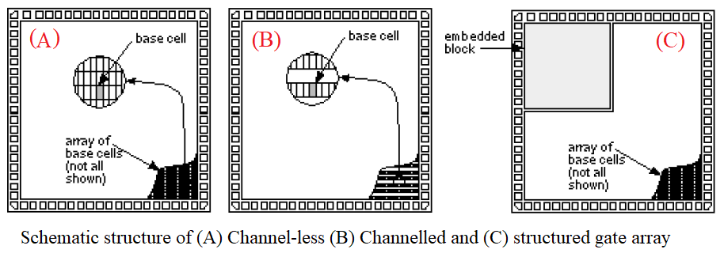

Gate Array Based Design:
In this design style, the transistors are predefined on a silicon wafer. These are called a base array or base cell. Only the top few layers of metal which are used to make interconnections are customized. The designer chooses a pre-verified gate array library of logic cells. These are termed as "macros". The designer needs to define the interconnections between the base array. Depending upon the configuration of base cells, there are three different types of gate array-based design, (1) channel-less (2) Channelled, and (3) Structured gate array.
(1) Channel-less gate array:
(2) Channelled gate array:
(3) Structured gate array:
